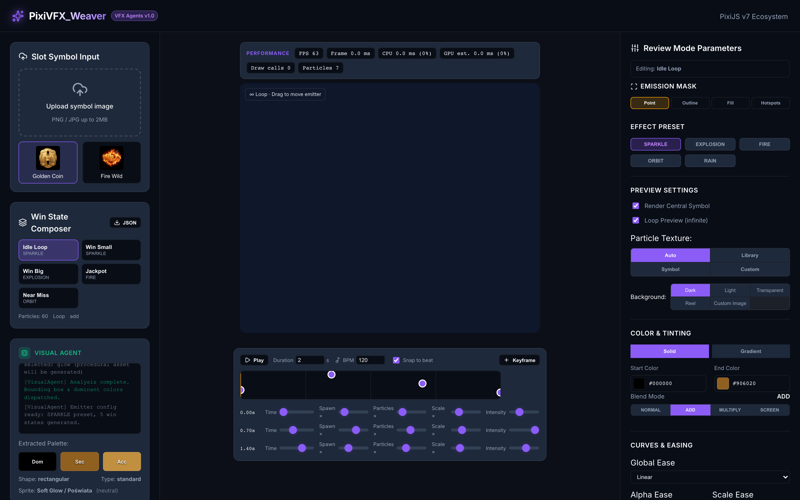
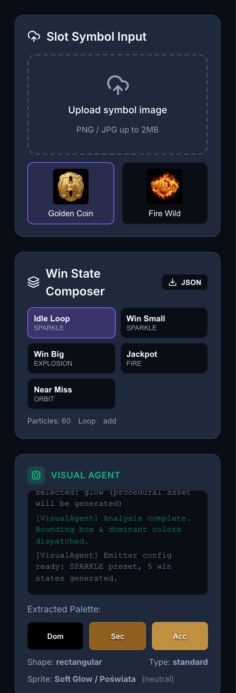
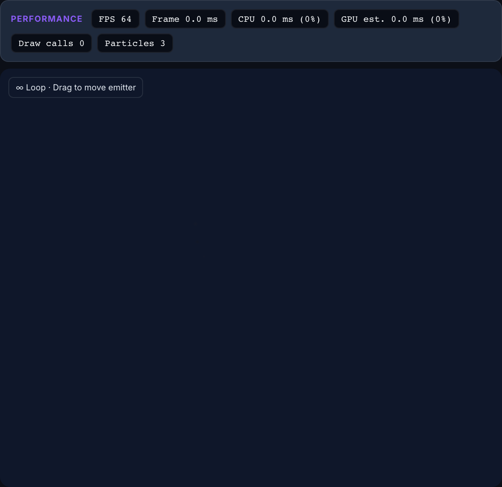
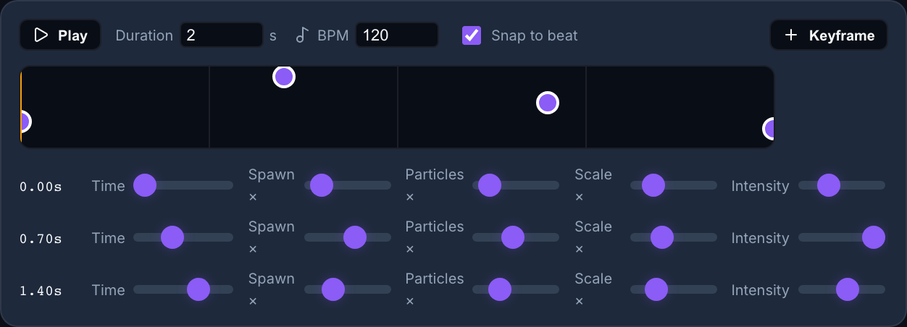
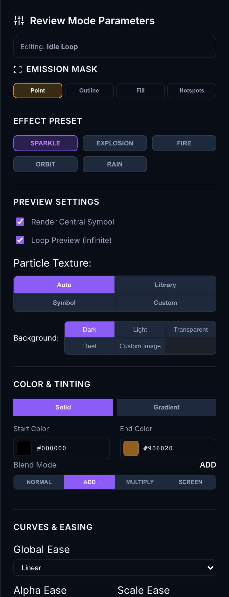
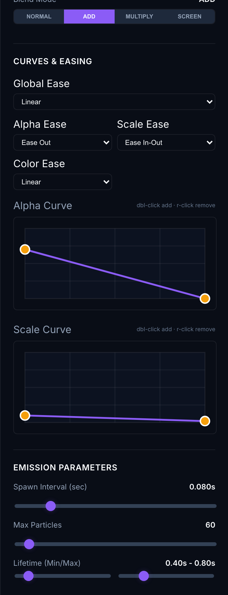
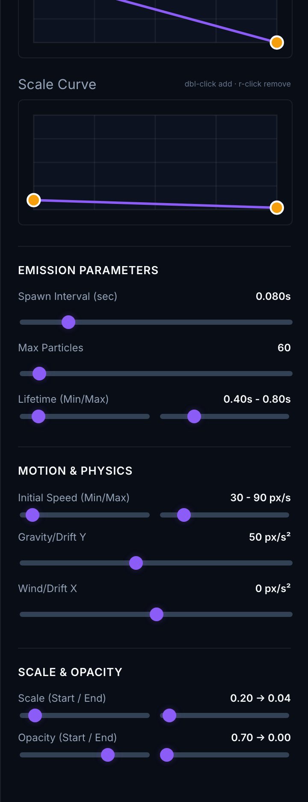
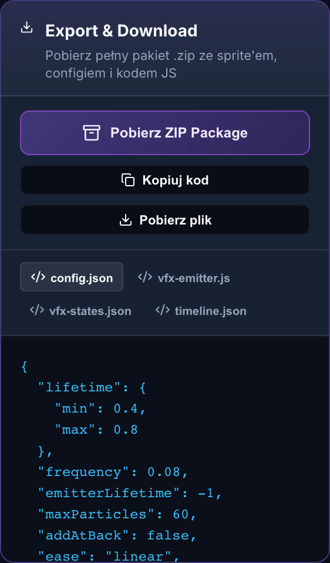

AI-assisted slot symbol VFX editor for PixiJS. Create, preview, tune, and export particle effects for casino game symbols.
This section explains how to clone the repository, open it in Cursor, install dependencies, and run the development server.
cursor.comOpen a terminal and clone the project:
git clone https://github.com/stefanskytom/vfx_editor.git cd vfx_editor
Alternatively, use SSH if your GitHub key is configured:
git clone git@github.com:stefanskytom/vfx_editor.git cd vfx_editor
vfx_editor folder.cursor . if the Cursor CLI is installed.
Open Cursor’s integrated terminal (View → Terminal or Ctrl+` / Cmd+`) and run:
npm install
npm run dev
The app runs on a fixed port:
http://localhost:5176/
If the port is busy or you see stale UI after updates, restart with:
npm run dev:restart
npm run build npm run preview
| Command | Description |
|---|---|
npm run dev | Start Vite dev server on port 5176 |
npm run dev:restart | Kill port 5176 and restart dev server |
npm run build | Type-check and build production bundle |
npm run lint | Run Oxlint on source files |
npm run manual:build | Regenerate this PDF manual with screenshots |
PixiVFX Weaver is organized into three main columns. The left column handles symbol input, AI analysis logs, win states, and export. The center column shows the live PixiJS preview, performance stats, and timeline. The right column contains all tuning controls.


Upload a PNG or JPG symbol (up to ~2 MB) or pick a built-in preset:
When you upload or select a symbol, the Visual Agent analyzes colors, shape, brightness, and VFX theme, then auto-generates emitter parameters and a 5-state win pack.
After analysis, five win states are generated automatically:
| State | Typical Use | Default Preset |
|---|---|---|
| Idle Loop | Symbol at rest on the reel | Sparkle (subtle) |
| Win Small | Minor line win | Sparkle (medium) |
| Win Big | Large win burst | Explosion (one-shot) |
| Jackpot | Top win celebration | Fire (upward) |
| Near Miss | Almost-win tease | Orbit (screen blend) |
Click a state to load its parameters into Review Mode. Edits you make are saved back to the active state. Use the JSON button for a quick win-states JSON download.
Displays real-time analysis logs and extracted palette swatches (Dominant, Secondary, Accent). Also shows detected shape, symbol type, procedural sprite choice, and inferred VFX theme.
The Visual Agent drives automatic preset selection — you can override everything manually in the right panel afterward.

Displayed above the canvas:
When a mask mode other than Point is active, colored dots show spawn regions relative to the symbol. Toggle overlay visibility in the right panel under Emission Mask.

Animate spawn intensity over time for win sequences synced to music or game events.
| Control | Description |
|---|---|
| Play / Pause | Preview timeline-driven modulation in the canvas |
| Duration | Total scene length in seconds (0.5–10 s) |
| BPM | Beats per minute for grid and snap (60–200) |
| Snap to beat | Quantize keyframe placement to beat grid |
| Keyframe | Add keyframe at current playhead (max 8) |
| Drag keyframe | Move horizontally on the track |
| Scrub track | Click/drag empty track area to move playhead |
All controls apply to the currently selected win state. The badge at the top shows which state you are editing.

| Mode | Behavior |
|---|---|
| Point | Classic center emitter (default) |
| Outline | Particles spawn from symbol edges |
| Fill | Particles spawn inside symbol body |
| Hotspots | Spawn from brightest accent regions |
Toggle Show mask overlay to visualize spawn points on the canvas.
Quick-switch between five base behaviors. Changing preset also updates the procedural sprite type:
| Option | Description |
|---|---|
| Render Central Symbol | Show/hide the slot symbol sprite on canvas |
| Loop Preview | Infinite emission vs timed burst |
| Burst Duration | Emitter lifetime when loop is off (0.2–5 s) |
| Particle Texture | Auto (procedural) · Library · Symbol · Custom upload |
| Background | dark · light · transparent · reel · custom image |
Upload an image, then use Fit or Cover presets. Drag the labeled box to reposition; drag corner handles to scale proportionally.

Fine-grained control over particle lifetime animation:

The export section is located at the bottom of the left panel.

| Button | Output |
|---|---|
| Pobierz ZIP Package | Full archive: configs, JS boilerplate, particle sprite, symbol image |
| Kopiuj kod | Copy active tab content to clipboard |
| Pobierz plik | Download single file from active tab |
| Tab | File | Contents |
|---|---|---|
| config.json | {name}-emitter.json | Current emitter configuration for @pixi/particle-emitter |
| vfx-emitter.js | {name}-vfx.js | Ready-to-paste PixiJS integration function |
| vfx-states.json | {name}-vfx-states.json | All 5 win states with params + configs |
| timeline.json | {name}-timeline.json | Timeline keyframes + sampled config patches |
The ZIP archive is production-ready for handing off to a game client team.
{symbol}-vfx/
├── README.txt
├── manifest.json
├── config/
│ ├── {symbol}-emitter.json
│ ├── {symbol}-params.json
│ ├── {symbol}-vfx-states.json
│ ├── {symbol}-timeline.json
│ └── {symbol}-emission-mask.json (if mask ≠ point)
├── scripts/
│ └── {symbol}-vfx-emitter.js
└── textures/
├── particle.png (active particle sprite)
└── symbol.jpg (reference symbol image)
JSON configs reference textures with relative paths (../textures/particle.png) so they work inside the extracted folder structure.
textures/particle.png as a PIXI.Texture.scripts/{symbol}-vfx-emitter.js.initSymbolVFX(container, texture, app.ticker).npm run dev).npm run dev:restart and hard-refresh the browser (Cmd+Shift+R / Ctrl+Shift+R). The app uses fixed port 5176.
npm run dev:restart
This kills any process on port 5176 and starts a fresh Vite instance.
Ensure your GitHub account has write access to stefanskytom/vfx_editor, or push using credentials for the repository owner account.